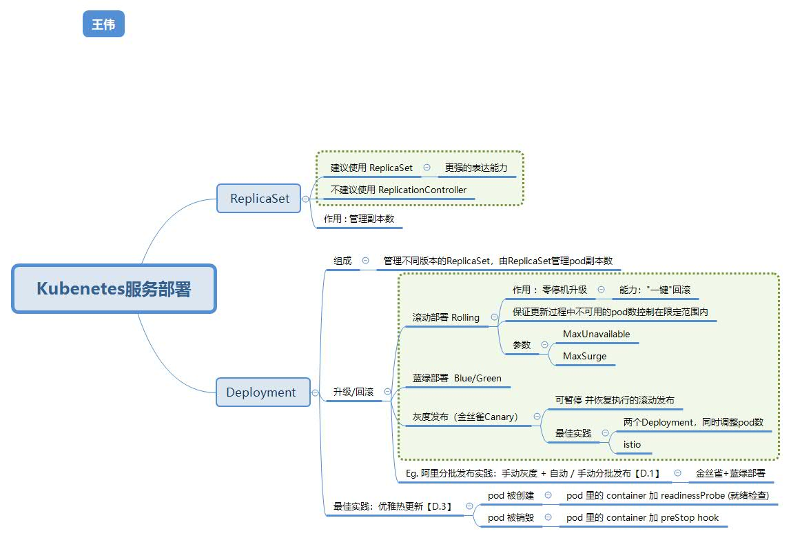

Deployment #

- Pod-template-hash label
- Rolling Update Deployment Max Surge Max Unavailable
Argo Rollouts [5] #
Argo Rollouts 是一个 Kubernetes 控制器，它提供了在应用程序部署过程中执行渐进式发布和蓝绿部署等高级部署策略的能力。它是基于 Kubernetes 原生的 Deployment 资源构建的，通过引入新的 Rollout 资源来扩展和增强部署控制。
参考 #
Deployment D
- 如何在 Kubernetes 中对无状态应用进行分批发布 阿里 孙齐（代序）
- 第6 章 ： 应用编排与管理： Deployment 阿里
- kubernetes 最佳实践：优雅热更新 陈鹏
- Deployment jimmysong
- Argo Rollouts 中文文档 jimmysong